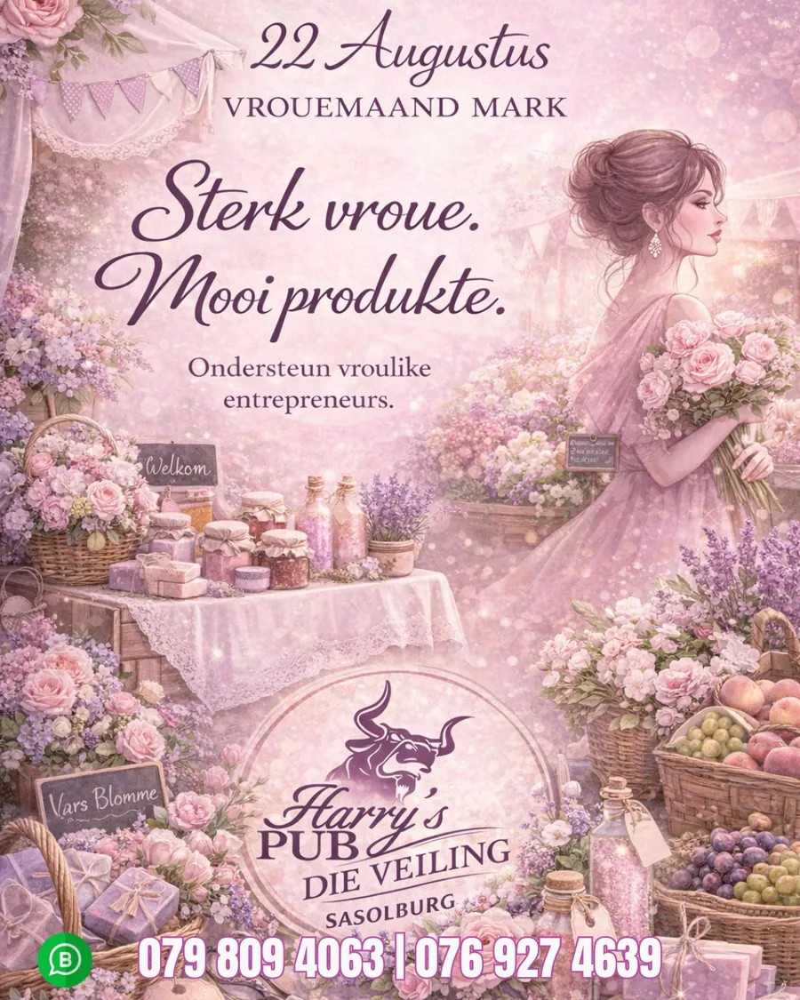
22Aug
Die Veiling Sasolburg
Vrouedag Mark
Kom vier sterk vroue en mooi, unieke produkte saam met ons. Vars blomme, handgemaakte en plaaslike produkte.
Van lewendige musiek en bingo-aande tot markte en potjiekos-kompetisies. Vir alle besprekings, WhatsApp die woord BESPREEK na die betrokke tak.
Verby gebeure verdwyn vanself van hierdie bladsy af. Filter op tak of op tipe.

Kom vier sterk vroue en mooi, unieke produkte saam met ons. Vars blomme, handgemaakte en plaaslike produkte.

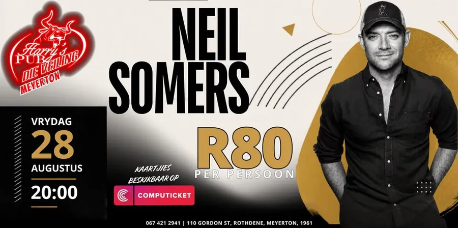
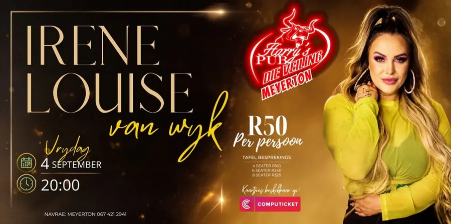

TNT vs Vaalhoed vs Pollie Dansorkes. Kom ondersteun jou gunsteling.

Lekker op die plotte. Sondagmark met vars produkte, handgemaakte goed en plaaslike lekkernye.

Die stryd raak nou ernstig. Nog ’n aand van boere-orkeste wat dit uitspook.
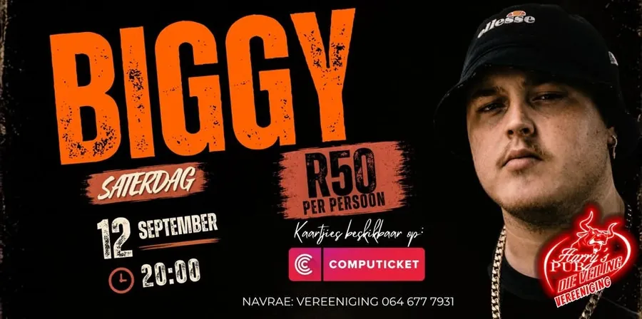
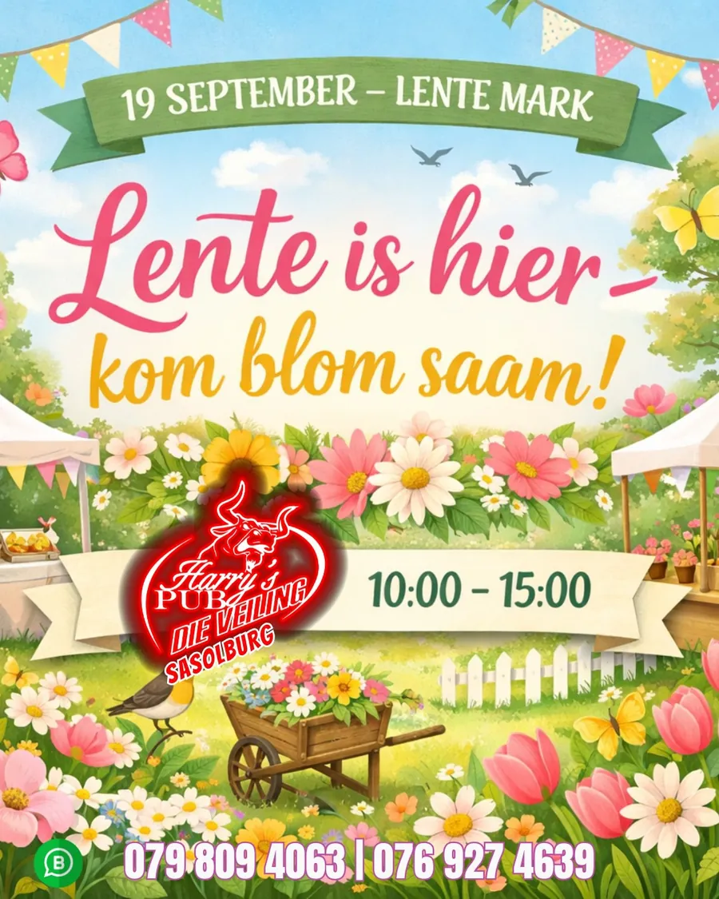
Lente is hier, kom blom saam met ons. ’n Dag vol kleur, vars energie en lekker kuier.
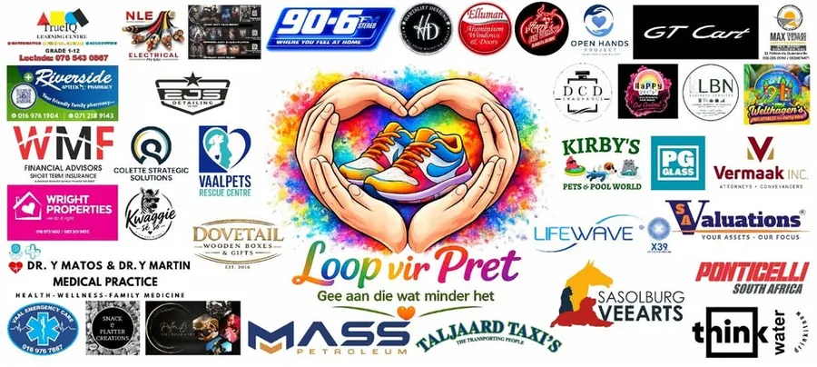
5 km pretloop en colour run saam met Open Hands. Vanaf 10:00 kunstenaars, springkastele en Braaidag-kuier.

Die potte gaan kook. Dink jy en jou span het wat dit vat om die beste potjie te maak?
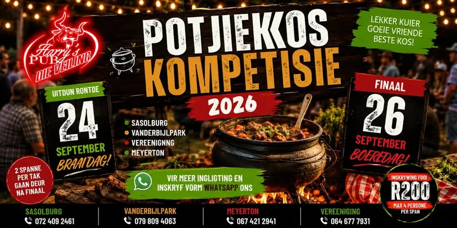
Kom wys wat jou span kan doen by Die Veiling se Potjiekos Kompetisie 2026.

Uitdunronde 24 September op Braaidag, groot finaal 26 September op Boeredag. Twee spanne per tak gaan deur.

Uitdunronde 24 September op Braaidag, groot finaal 26 September op Boeredag. Twee spanne per tak gaan deur.

’n Dag propvol plaas-vibes, lekker musiek, heerlike kos en goeie mense. Die groot finaal van die potjiekos kompetisie.

Kleur jou dag op die plotte. Vars produkte, handgemaakte produkte en plaaslike lekkernye.
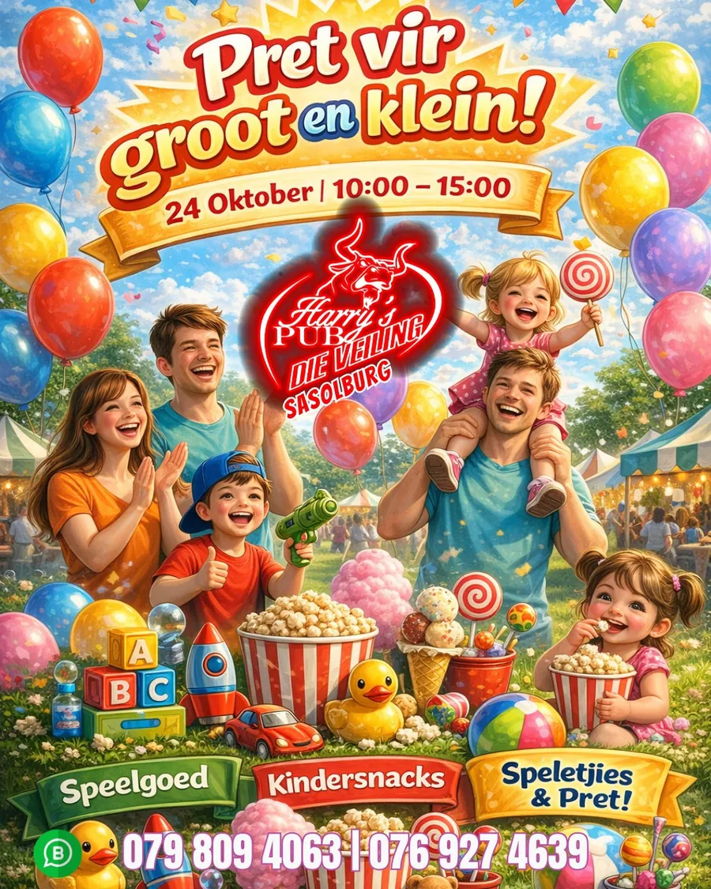
Pret vir groot en klein. ’n Dag propvol speelgoed, kindersnacks, speletjies en hope pret.
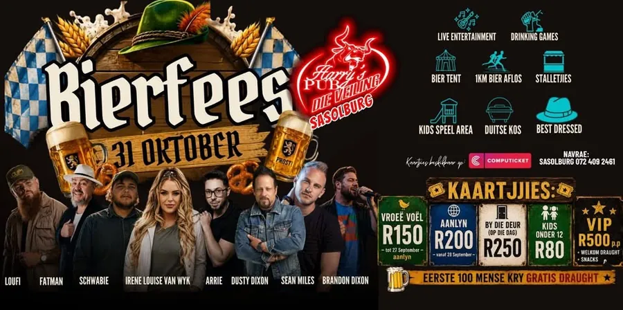
Sasolburg se grootste bierfees. ’n Dag vol yskoue bier, Duitse kos, vermaak en ’n groot fees-atmosfeer.

Somervibes begin hier. Vars produkte, handgemaakte produkte en plaaslike lekkernye.

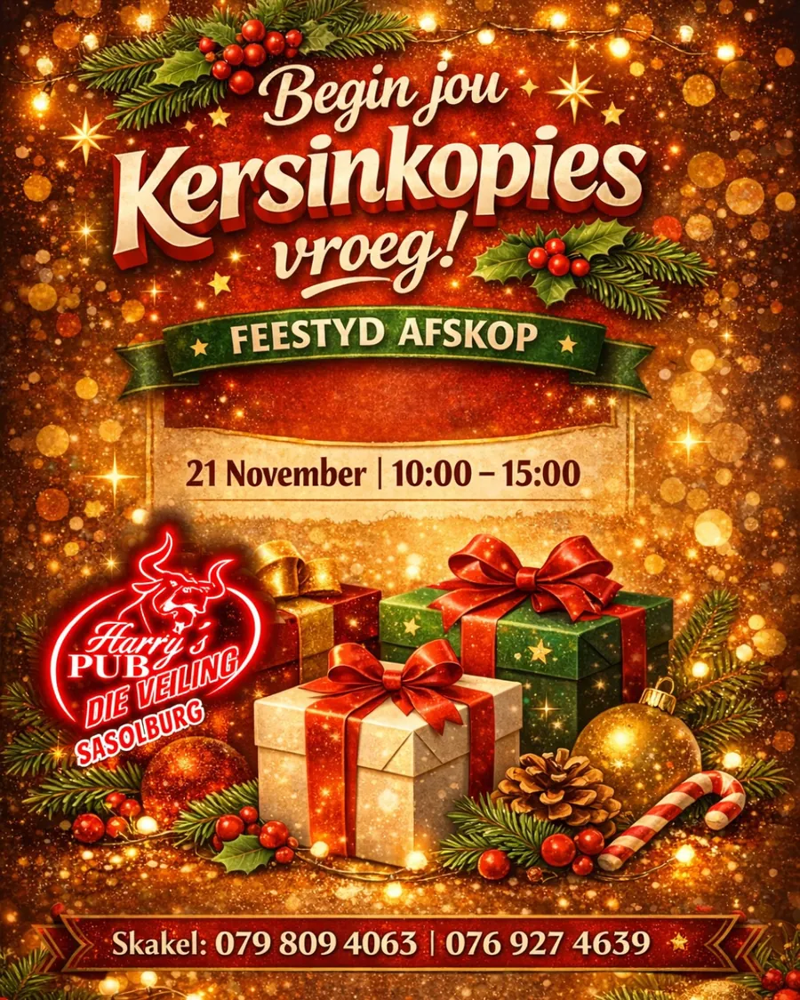
Begin jou kersinkopies vroeg. Feestyd afskop met vars produkte, handgemaakte produkte en plaaslike lekkernye.
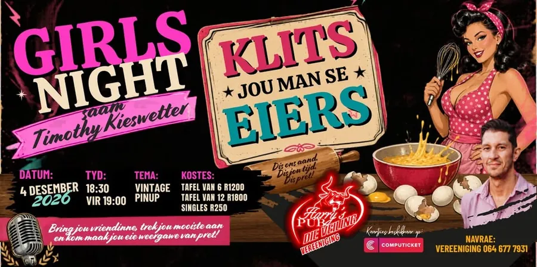
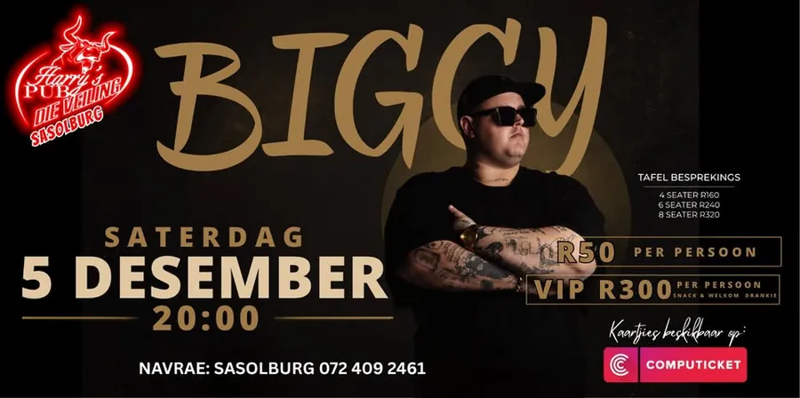

Kersfees begin op die plotte. Sondagmark met vars produkte, handgemaakte produkte en plaaslike lekkernye.
Kersfees begin by die mark. Vars produkte, handgemaakte produkte en plaaslike lekkernye.
Kaartjies vir geselekteerde shows is vooraf by Computicket beskikbaar, en gewoonlik goedkoper as by die deur. Vir tafels en groepe, WhatsApp die tak direk.
WhatsApp die woord BESPREEK na jou naaste tak, of bel ons. Groepe, funksies en show-kaartjies, ons help jou reg.